16. Test Session - Test Case Management¶
1. Call a phone number
2. Read OTP from phone
3. Send Instruction to device
At times, you may want to execute commands through the device keyboard. You can use the ‘Send Instruction to device’ button to execute actions performed on the device keyboard.
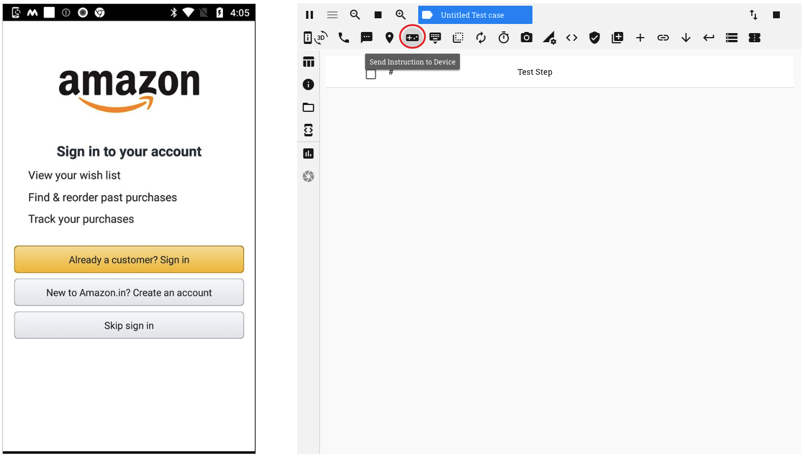4. Hide keyboard if displayed
Clicking on the ‘Hide Keyboard’ button, minimizes the device keyboard that is open on the app
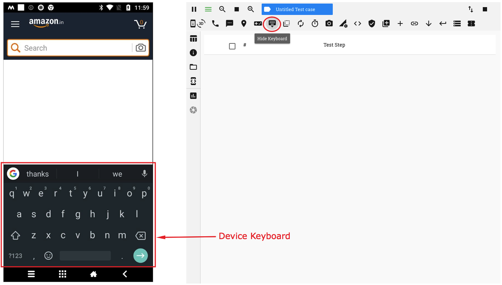 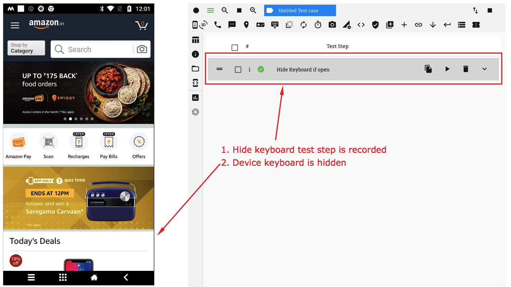5. Send app to background for 10 secs
The ‘Send App to background’ button, enables you to send the app into the background for a specified duration.
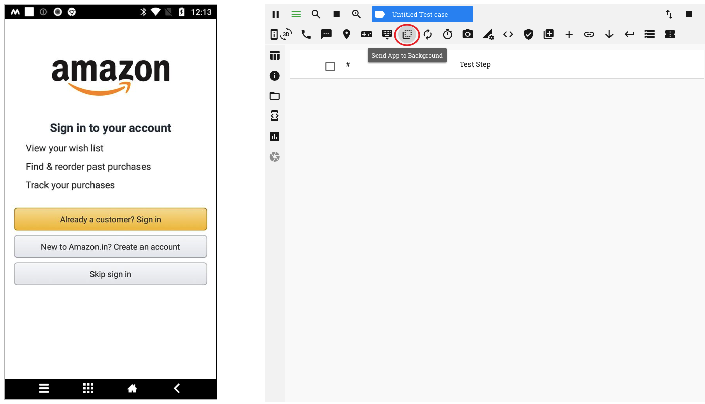If the ‘Resume mobile app’ option is selected, the app is brought back to the forefront at the end of the duration
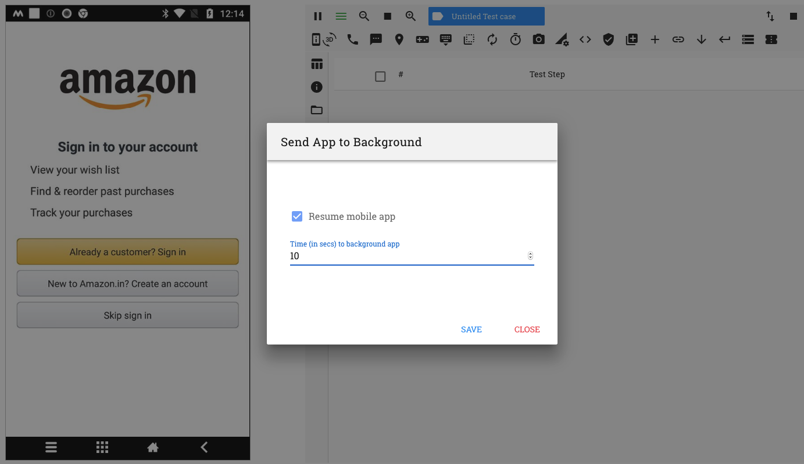6. Reset app and clear user data
On clicking on the ‘Reset app and clear user data’ button, all data related to the app that has been cached is cleared and the app is then relaunched. The app then behaves as if it has been launched for the first time
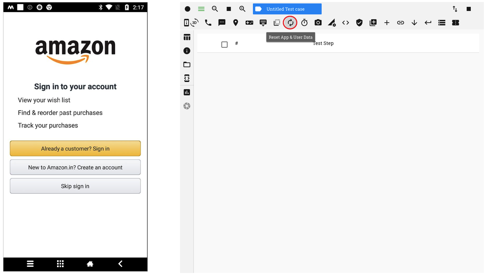7. Pause Test Execution
You can add a pause time or a wait period after a test step by clicking on the ‘Pause test execution’ button
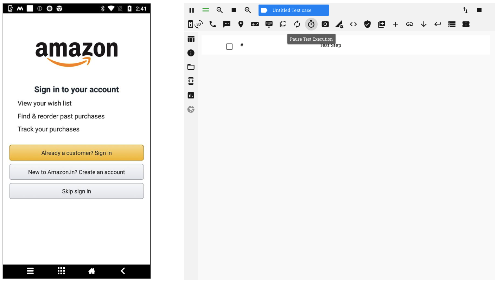You can provide a duration (in seconds) for which test execution will be paused
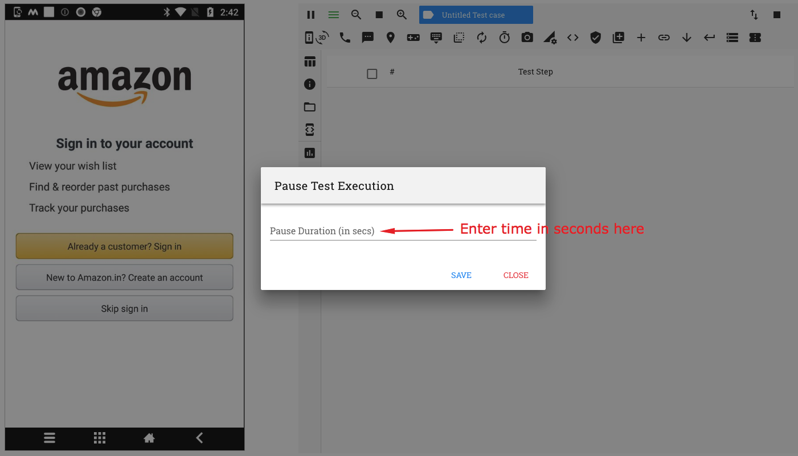 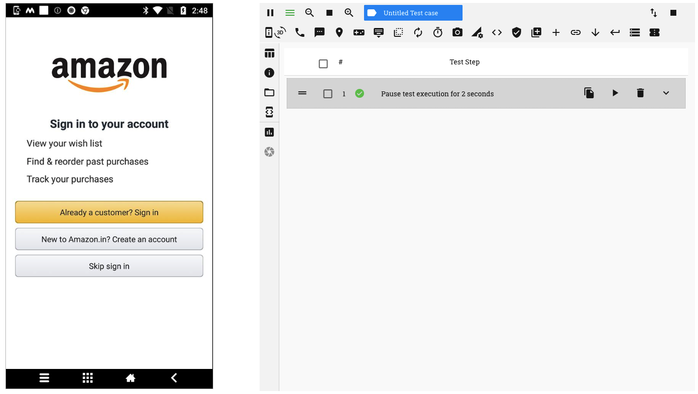8. Capture device screenshot
You can record a test step to capture a screenshot of the device screen at any point during the execution of a test case. This can be done by clicking on the ‘Capture Device Screen’ button
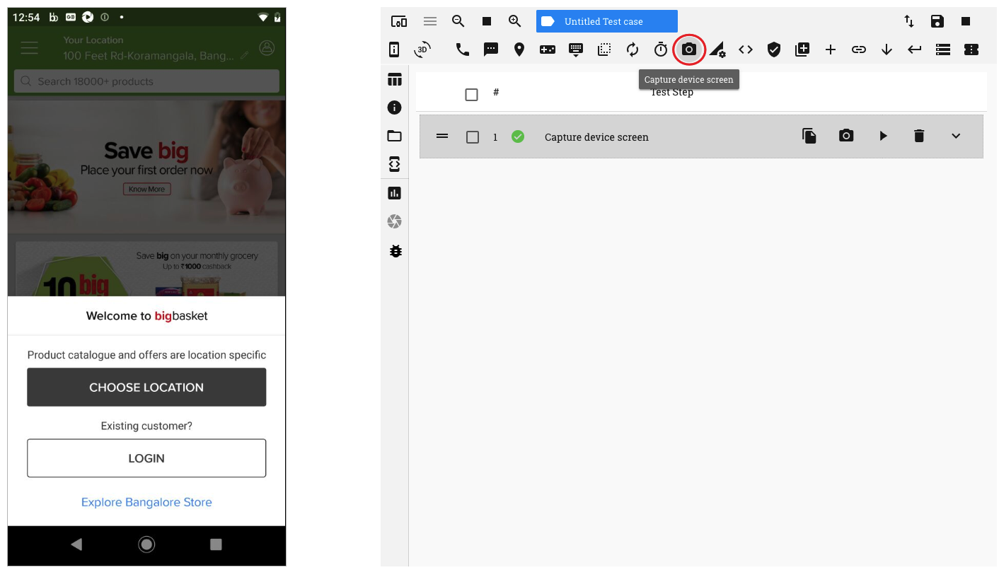When this test step is executed in a test run, the screenshot captured is available in the functional reports
9. Configure Device Network
RobusTest provides you an option to choose a network configuration on your device as part of your test case.
To do so, click on the ‘Configure Device Network’ button
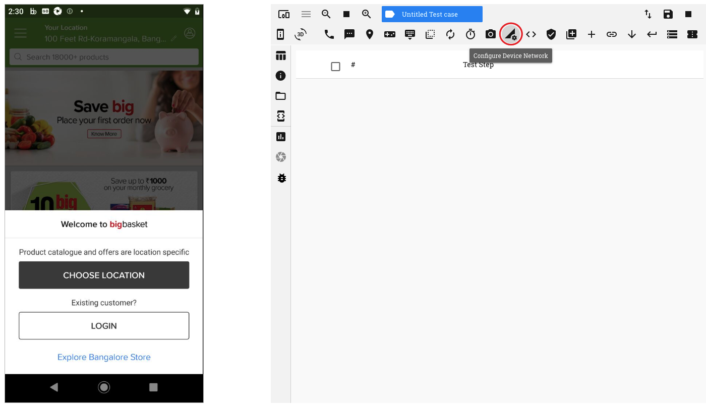On Clicking on this button, a pop-up window opens from which you may select one of the following options:
- No Connection - This disables both Wifi and Mobile Data networks on the device
- Airplane Mode - This enables Airplane mode on the device
- Wifi Only - This enables Wifi network on the device
- Data Only - This enables the Mobile Data network on the device
- All Networks On - This enables both Wifi and Mobile Data networks on the device
Once an option is selected, a test step is created to enable/disable the selected option
10. Execute ADB command
11. Verification
12. Execute REST API
13. Import Function
User can import functions created by clicking on the ‘Import Function’ button
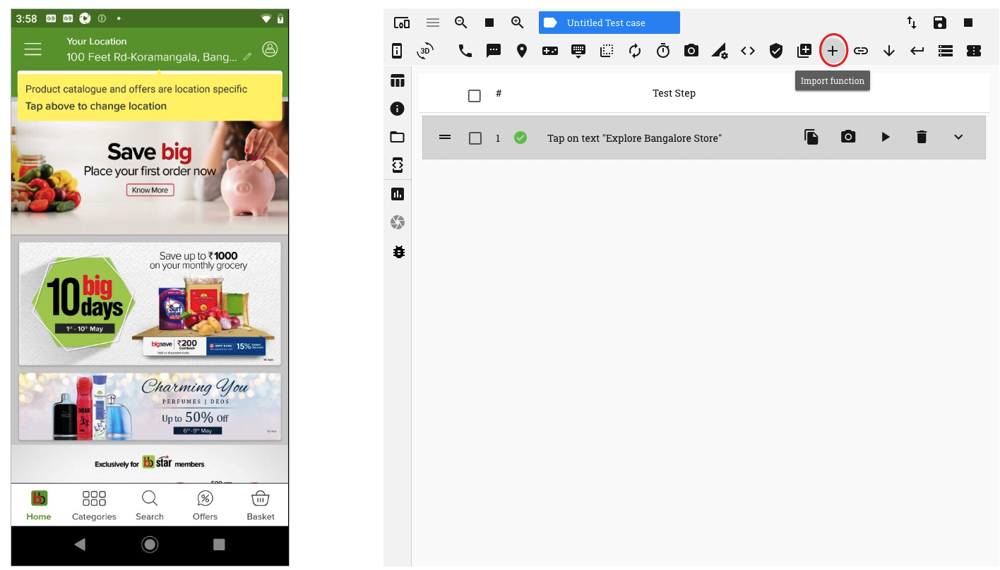On the window that pops up, a list of functions is displayed. Click on the required function and click on the ‘Save’ button.
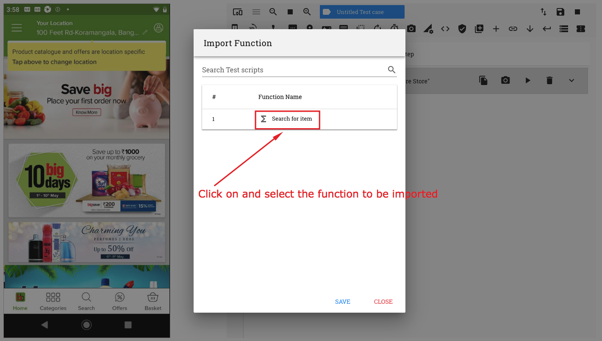The function is now seen in a test step as part of the test case
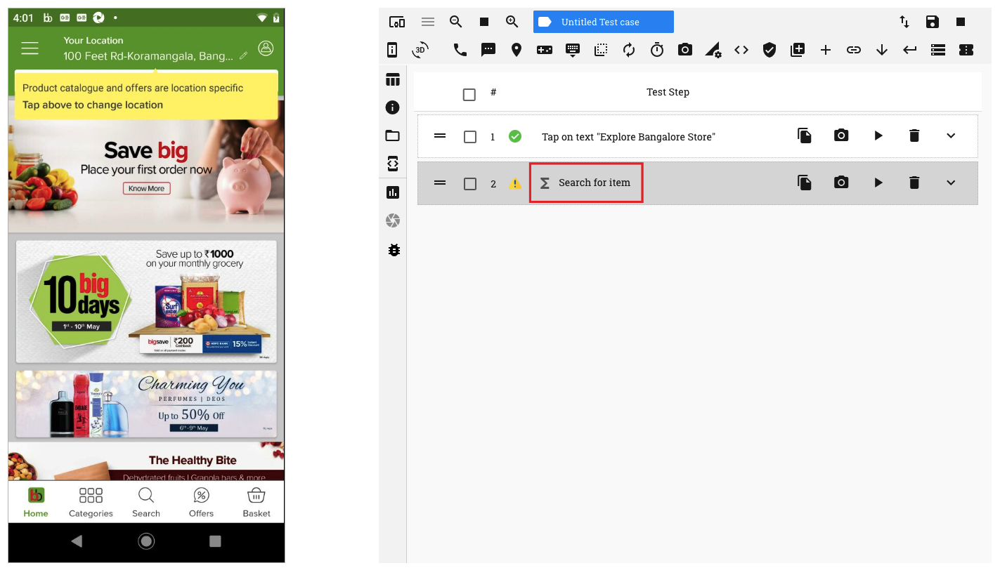14. Execute Deeplink
15. Get Current Context
16. Set Current Context
17. Execute Database calls
18. Manage Android Permission Alerts